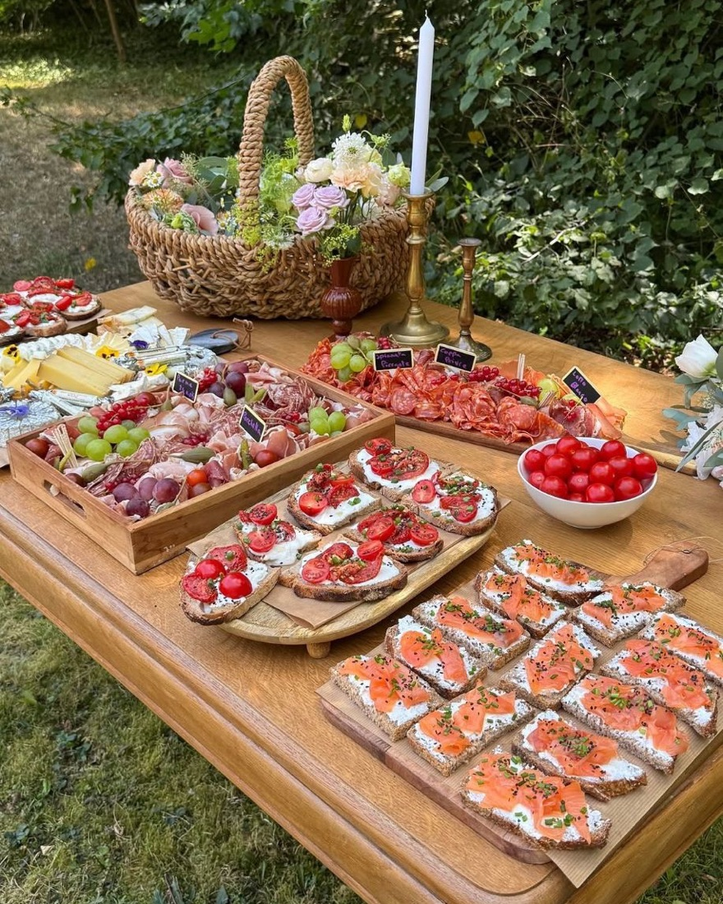
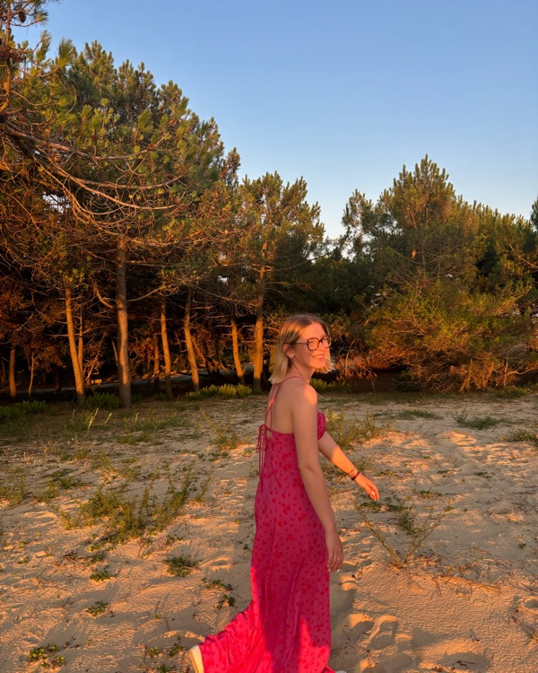
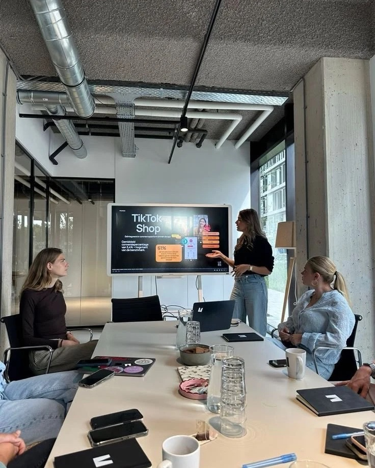
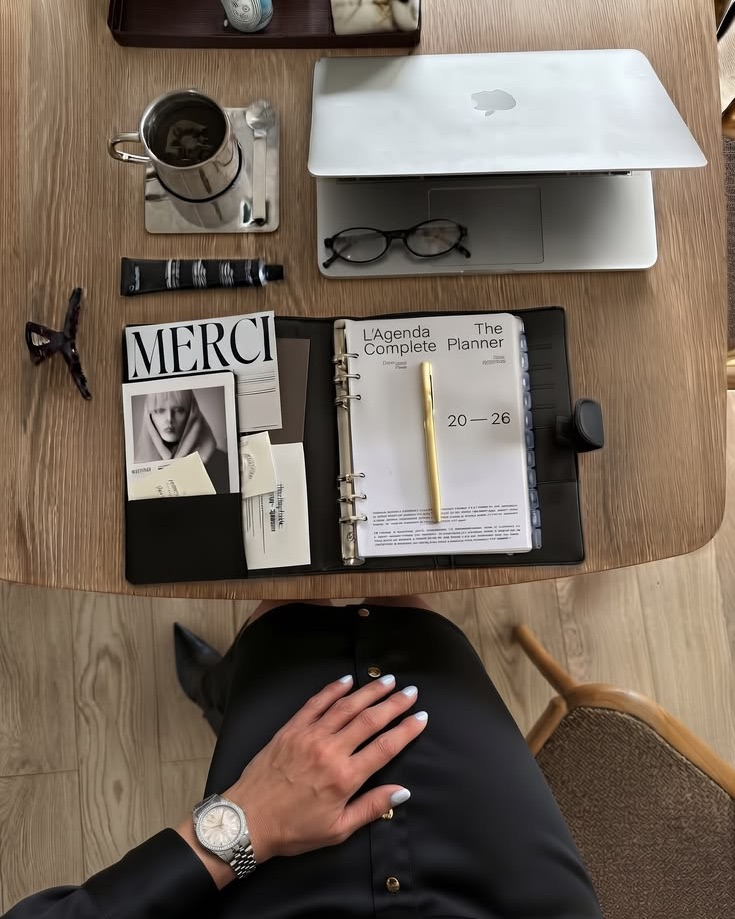

Portfolio — 2026
LouAlfred
Diplômée d’un Bachelor Communication, Marketing & Événementiel


Des idées, des histoires, des événements.
Diplômée d’un Bachelor Communication, Marketing & Événementiel, je conçois des projets de A à Z : imaginer des stratégies, créer des contenus impactants et organiser des événements qui marquent les esprits.
Au fil de mes expériences, j’ai développé une vision polyvalente de la communication, du marketing et de l’événementiel. J’aime imaginer des concepts, développer des idées créatives et leur donner vie à travers des projets concrets, pensés dans les moindres détails.
- Créative
- Dynamique
- Curieuse
- Autonome
- Motivée
Mes projets
Mes expériences à l’école et en entreprise m’ont permis de mener différents projets de communication, alliant stratégie, création de contenu et gestion de projet. Elles m’ont permis de développer des compétences concrètes, comme l’adaptabilité, le travail en équipe et l’analyse des besoins.
-

Projets en formation
Logotype, identité de marque, spots publicitaires, gazette.
Voir les projets → -
Projets en entreprise
Événementiel, réseaux sociaux, sites web, print, photographie.
Voir les projets → -

Projets perso
Les projets menés par curiosité et par passion.
Voir les projets →
- J’imagine des stratégies.
- J’organise des événements.
- Je crée des contenus.
- Je conçois des sites web.
- Je photographie.
- Je monte des vidéos.
- Je pilote des projets.
21
Projets réalisés
04
Expériences pro
03
Ans d’alternance
02
Diplômes
« Dynamique et curieuse, je suis passionnée par la communication et la création de projets événementiels concrets. »
Travaillons
ensemble.
lou.alfred@yahoo.com
- Téléphone
- 06 04 09 63 14
- Localisation
- Caen — permis B & véhiculée
- Réseaux
- LinkedIn ↗